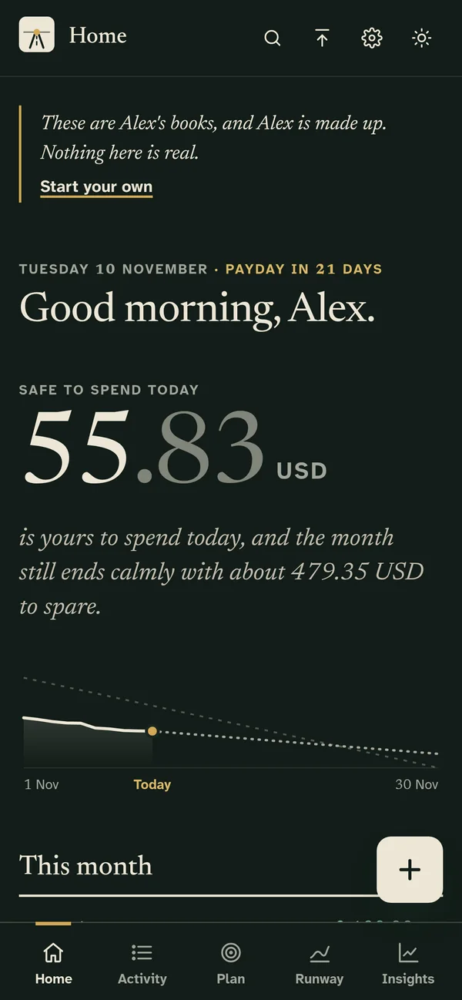
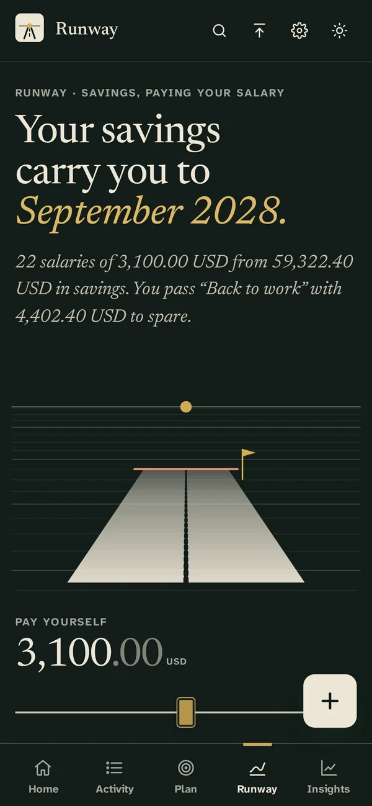

Ballast
Live app · open source
Personal finance that turns savings into a salary that lasts.


Ballast says what is safe to spend today, draws how long the money lasts as a road that ends on a date, and reads bank statements on the device, checking every row against the running balance to the smallest unit.
- 599
- automated tests, unit and end-to-end
- 40
- currencies, in exact whole-number maths
- 100
- Lighthouse score on desktop
- 0
- accounts, servers or trackers
- Open the live app
- Try it with demo data
- Source on GitHub
- TypeScript · Astro · Preact · IndexedDB · pdf.js · Playwright